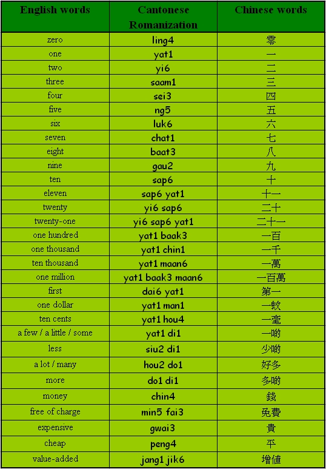
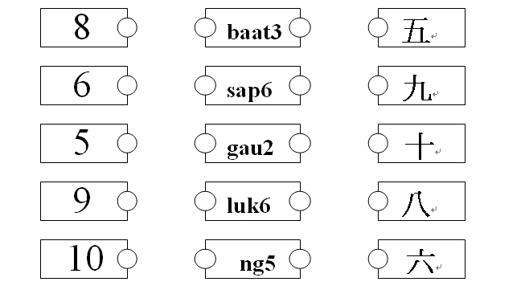

Unit 5 Numbers and Money
Objectives
- To recognize and pronounce Cantonese words with the initials [b], [d], [l], [s], [y];
- To recognize and pronounce Cantonese words with the finals [at], [ap], [ou], [in], [aak];
- To use simple Cantonese vocabulary and expressions in numbers and money.
Warm up Work together.
- What would you say if you receive help from others?
- What would you say if you are late for class?
Vocabulary
* To form numbers between 11 and 19, you can simply add [sap6] (ten) before the single-digit number. To form multiples of ten, you can use [sap6] (ten) as a prefix before the number.
* To form ordinal numbers, add [dai6] in front of the digit numbers.
* In Cantonese, telling dollars and cents are quite straightforward. You can simply add [man1] after the number for dollars and add [ho4] after the number for cents.

Sentence structure
“……a3” type question (S Adj a3?)
Can I have your phone number?
你可唔可以俾你個電話號碼我呀？
[nei5 ho2 m4 ho2 yi5 bei2 nei5 go3 din6 wa6 hou6 ma5 ngo5 a3?]
Where are you going to?
你而家去邊度呀？
[nei5 yi4 ga1 heui3 bin1 dou6 a3?]
Conversation Practice with a partner.
Scene: Sally is chatting with Linda at school campus.
Sally: Can you give me your phone number?
你可唔可以俾你個電話號碼我呀？
[nei5 ho2 ng4 ho2 yi5 bei2 nei5 go3 din6 wa6 hou6 ma5 ngo5 a3?]
Linda: Okay, it is 9738 1256.
可以，係九七三八一二五六。
[ho2 yi5, hai6 gau2 chat1 saam1 baat3 yat1 yi6 ng5 luk6.]
Sally: Where are you going to?
你宜家去邊度呀？
[nei5 yi4 ga1 heui3 bin1 dou6 a3?]
Linda: I am going to 7-11 to add 100 dollars to my Octopus card.
我去七十一增值一百蚊入八達通咭。
[ngo5 heui3 chat1 sap6 yat1 jang1 jik6 yat1 baak3 man1 yap6 baat3 daat6 tung1 kaat1.]
Sally: Okay, see you on Thursady.
好啦，星期四見。
[hou2 la1, sing1 ]ei4 sei3 gin3.]
Role-play Have conversations similar to the above conversation.
- Change the underlined parts. Use your imagination and the vocabulary you have learnt.
＊ Remember to look up when speaking. Don't just read!
Quiz
Match the Cantonese romanization symbols with the Chinese words and numbers.

Discussion Ask your partner(s) these questions. Ask follow-up questions!
- Can you say your telephone number in Cantonese to your partner?
- Can you say this price in Cantonese – ‘$135.90’?
- Can you ask your partner to change a ten-dollar note into coins for you?